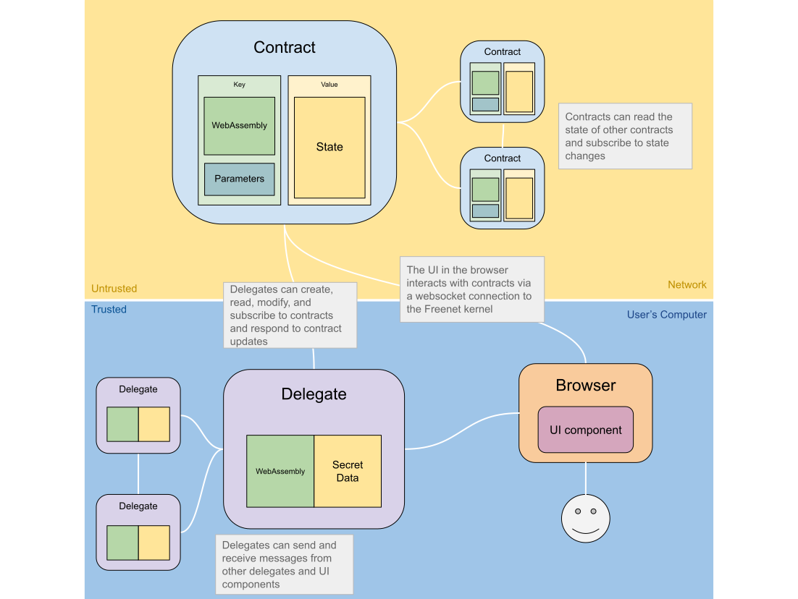

Anatomy of a Decentralized Application
Delegates, contracts, and user interfaces (UIs) each serve distinct roles in the Freenet ecosystem. Contracts control public data, or "shared state". Delegates act as the user's agent and can store private data on the user's behalf, while UIs provide an interface between these and the user through a web browser.

Freenet Kernel
The kernel is the core of Freenet, it's the software that runs on the user's computer. It's responsible for:
- Providing a user-friendly interface to access Freenet via a web browser
- Host the user's delegates and the private data they store
- Host contracts and their associated data on behalf of the network
- Manage communication between contracts, delegates, and UI componets
The kernel is written in Rust and is designed to be small (hopefully less than 5 MB), efficient, and run on a wide range of devices like smartphones, desktop computers, and embedded devices.
User Interface
On the normal web, a user might visit https://gmail.com/, their browser will download the Gmail user interface which then runs in their browser and connects back to the Gmail servers.
On Freenet the user interface is downloaded from a Freenet contract, and it interacts with contracts and delegates through the Freenet kernel.

These UIs are built using web technologies such as HTML, CSS, and JavaScript, and are distributed over Freenet and run in a web browser. UIs can create, retrieve, and update contracts through a WebSocket connection to the local Freenet peer, as well as communicate with delegates.
Because UIs run in a web browser, they can be built using any web framework, such as React, Angular, Vue.js, Bootstrap, and so on.
Contracts
Contracts in Freenet are WebAssembly components that manage and regulate public state. They can be likened to inodes in a filesystem, tables in a database, or memory locations in a globally shared memory. Contracts define the circumstances under which state can be modified and whether a given state is allowed under the contract.
Contracts and their associated state reside on the Freenet network on peers determined by the contract's location, which is derived from its WebAssembly code and parameters. While a user's delegates are hosted on their local Freenet peer, contracts are hosted on the network as a whole.
Contracts also outline how to merge two valid states, creating a new state that incorporates both. This process ensures eventual consistency of the state in Freenet, using an approach akin to CRDTs.
Each contract is identified by a cryptographic hash, which is a combination of its code and parameters, also referred to as its "key". This key is used to identify the contract and to verify that the contract's code and parameters have not been tampered with.
Contract Use Cases
Take, for example, a public blog contract. The state of this contract would be the blog's content, which consists of a list of blog posts. The code within the contract dictates that new posts may only be added if they are signed by the blog's owner, while the contract's parameters include the blog owner's public key.
Delegates
Delegates are WebAssembly code that act as user avatars on Freenet, they must implement the ComponentInterface.
Delegates run in the Freenet kernel and manage private data and interact with other Freenet entities like contracts, apps, and other delegates on behalf of the user. They can store and control private data like cryptographic keys, tokens, and passwords, and communicate with users, for example to ask permission to sign some data. They can be created by UI components or other delegates.
Unlike contracts, which require network verification, delegates run on the user's computer and are trusted to execute code without verification. Delegates' state is private, while contracts' state is public but may be encrypted.
Delegates are used for:
- Managing private data similar to a browser's web
storage
- eg. private keys, tokens
- Acting on the user's behalf on Freenet
- eg. consuming received messages in an inbox
- Storing user data
- e.g., contacts, messages
Origin Attestation
Delegates communicate with apps and other delegates using messages, a crucial aspect of which is the delegate's ability to identify the origin of a message. The origin is identified by the key associated with the app, contract, or other delegate that sent the message. This key is generated cryptographically based on the code and configuration parameters of the sender, enabling delegates to verify the behavior of other delegates or apps with which they interact.
This allows for highly flexible composability, as components can trust the behavior of the components they communicate with by verifying their code and configuration parameters.
Delegate Use Cases
-
A key manager delegate is responsible for managing a user's private keys, other components can request that the key manager delegate sign messages or other data on their behalf.
-
An inbox delegate is responsible for maintaining an inbox of messages sent to the user in a messaging system. It pulls messages from an inbox contract, decrypts them, and stores them locally where they can be queried by other components.